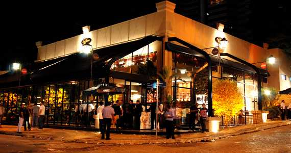
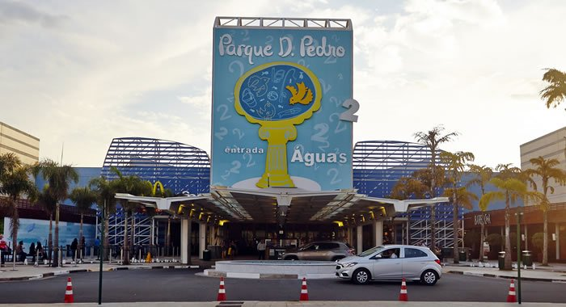
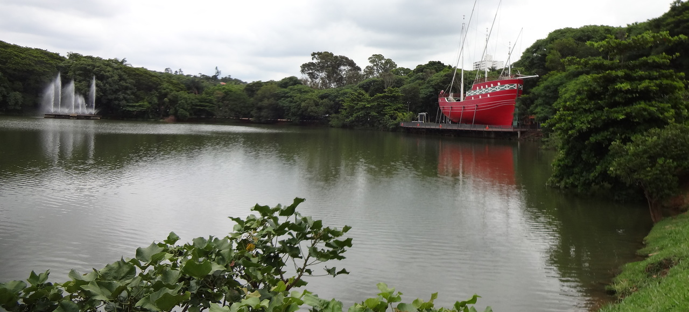

Bares
Depois de uma semana agitada, nada melhor que uma balada no fim de semana para relaxar e, quem sabe, paquerar um pouco e conhecer pessoas novas, bonitas e charmosas. Os bares em Campinas são ambientes propícios para paquerear e conhecer pessoas, além de saborear petiscos e beber uma cerveja gelada.
A cidade abriga vários locais para bater um bom papo, fazer um happy hour após um dia de trabalho cansativo ou simplesmente para passar o sábado à noite e conhecer alguém especial.

Campinas tem como pontos de lazer seus shoopings que estão espalhados pela cidade e que permitem encontros e passeios familiares e entre amigos, dentre esses shoppings temos o Parque Dom Pedro Shopping as mardens da Rodovia Dom Pedro e que por um tempo foi considerado o maior shopping da america latina

Lagoa do taquaral
A área popularmente conhecida como Lagoa do Taquaral constitui-se um dos mais importantes espaços de lazer da cidade de Campinas. Integrada no passado à histórica Fazenda Taquaral, os 33 alqueires que compõem a área foram transformados em Parque no ano de 1972, após aquisição pela Prefeitura das terras da família Alves de Lima.
O Complexo Taquaral, reúne uma grande variedade de espaços recreativos e culturais, a começar pela Lagoa Isaura Telles Alves de Lima, na qual é possível passear de pedalinhos e conta com o espetáculo de “águas dançantes” de uma fonte sonora aos finais de semana. Na Lagoa há também uma réplica da Caravela Anunciação, nau que trouxe Pedro Alvares Cabral às terras Brasileiras, com 29,65 m de comprimento por 8,64 de altura, 6 velas de tecido com a cruz da Ordem de Cristo ao centro Já na extensa área verde que rodeia a lagoa principal, tradicionalmente utilizado para caminhadas e corridas, encontram-se bosques destinados a piquenique; área com aparelhos de ginástica; 2 playgrounds, lanchonete, sanitários e um percurso de 3 km de bondinho (exemplares dos veículos que serviam Campinas até 1968).
Entre os equipamentos culturais, o Parque oferece a Concha Acústica, o Auditório Beethoven, o Museu Dinâmico de Ciências, o Museu do Esporte de Campinas, o Planetário, o relógio solar, o Centro de Vivência dos Idosos (no antigo Ginásio de Bocha ) e a Esplanada das Bandeiras (praça destinada a eventos cívicos e culturais).
Entre os equipamentos esportivos, encontram-se o Ginásio de Esportes “Alberto Jordano Ribeiro” (com quadra de vôlei e basquete); o Balneário Municipal (com 3 três piscinas abertas ao público); uma pista de cooper com extensão de 2.800 m; pista de aeromodelismo; pista de skate e patinação; ciclovia de aproximadamente 5 km e 16 quadras poliesportivas.

Mercado municipal
O Mercado Municipal foi projetado pelo arquiteto Ramos de Azevedo e inaugurado em 1908 pelo prefeito Orosimbo Maia. O edifício segue estilo neomouristico, construído inicialmente para servir como armazém de estocagem dos produtos transportados pela ferrovia Funilense, funcionava no início do século 20 como entreposto de açúcar da Estrada de Ferro Funilense que ia até o Porto de Santos.
Na lateral do Mercado Municipal de Campinas, onde estão instaladas atualmente as peixarias, funcionava a plataforma de embarque da Estação Carlos Botelho, onde o trem parava para embarcar as sacas, no local também circulava charretes e os bondes que traziam homens e mulheres vestidos de forma elegantes se tornando um um ponto de "footing" da cidade, foi um dos primeiros pontos do comércio de Campinas e também por um longo período, local de encontro da elite artística e intelectual da cidade.
Em 1982 o prédio foi tombado pelo Condephaat (Conselho de Defesa do Patrimônio Histórico, Artístico, Arquitetônico e Turístico do Estado de São Paulo), em 1995, pelo Conselho de Defesa do Patrimônio Artístico e Cultural de Campinas (Condepacc). No ano de 1996 suas características originais foram recuperadas por uma nova reforma.
Em 2005 sofreu nova reforma no telhado e boxes, seu telhado sua fachada pintada em 2005 e as platibandas padronizadas tornando um cartão postal e uma das 7 maravilhas de Campinas.
Sua área total é de 7.720 m², sendo 3.110 m² de área construída, mais estacionamento e 143 boxes para venda dos mais diversos produtos.
É lugar de história, de passeio, compras, ali tem naftalina, fumo de corda, canivetes de todos os tipos, fava de baunilha, frango caipira, flores, frutas, farinhas, sapatos e ervas. Tem ingredientes para feijoada, açougue, peixaria, lanchonete, pastelaria, equipamentos para pesca, artigos religiosos, aquários e peixes ornamentais, verduras, legumes frescos, queijos, temperos, pimentas, doces, loteria, mercearia, utensílios de cozinha e tantos outros. E vem sendo assim há mais de um século no velho Mercadão que resiste aos avanços dos supermercados.